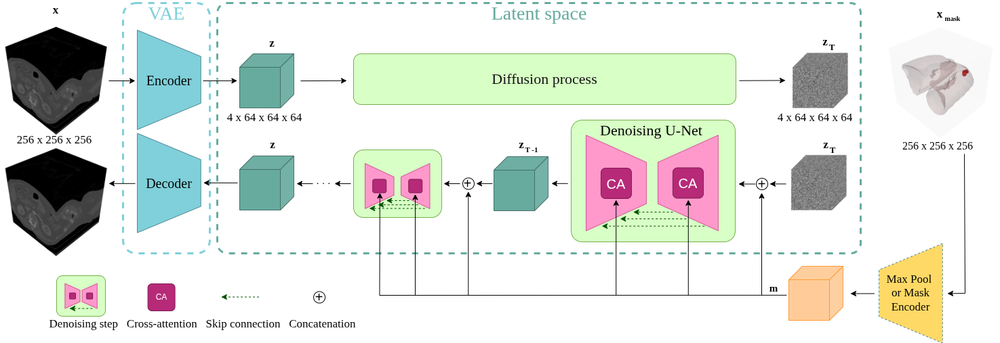

Anatomically Guided Latent Diffusion for High-Resolution 3D Chest CT Synthesis
1Eurecat, Centre Tecnològic de Catalunya, Barcelona, Spain
2Dept. de Matemàtiques i Informàtica, Universitat de Barcelona, Spain
3Barcelona Supercomputing Center (BSC), Spain
4Institut de Neurociències, Universitat de Barcelona, Barcelona, Spain

Abstract
Accurate and automated analysis of chest Computed Tomography (CT) scans is critical for early detection and risk stratification of lung cancer, the leading cause of cancer-related mortality worldwide. However, the development of robust deep learning models for lung nodule analysis is hindered by the limited availability of large, diverse, and well-annotated 3D CT datasets.
This work presents an anatomically guided latent diffusion framework for synthesizing high-quality three-dimensional chest CT volumes. The proposed approach, termed LAND (Lung and Nodule Diffusion), conditions the generative process on 3D anatomical masks of the lungs and pulmonary nodules to ensure accurate spatial localization and realistic anatomical structure. A dedicated variational autoencoder (VAE) encodes anatomical masks into a latent representation that preserves fine-grained nodule morphology. In addition, conditional texture modeling within masked nodule regions enables controlled variation in lesion appearance.
Compared with existing 3D diffusion-based methods, LAND substantially reduces computational requirements and generates 256×256×256 volumes at 1 mm isotropic resolution using 10–16 GB of GPU memory during training and less than 8 GB during inference. Experimental results demonstrate high visual fidelity and anatomical realism, further supported by improved performance in downstream lung nodule segmentation and classification tasks. These findings indicate that LAND provides a practical and efficient framework for anatomically guided 3D medical image synthesis and data augmentation.
Contributions
- LAND, an anatomically guided latent diffusion model that synthesizes high-resolution (256×256×256 at 1 mm isotropic) 3D chest CT volumes conditioned on 3D lung and nodule masks.
- A dedicated mask VAE that embeds anatomical masks into a latent representation preserving fine-grained nodule morphology, which is especially important for smaller nodules.
- Conditional texture modeling within masked nodule regions, enabling controlled variation in lesion appearance and solidity.
- Demonstrated downstream utility: models trained on LAND-augmented data achieve superior lung nodule segmentation and classification performance, particularly in low-data and unbalanced regimes.
- High computational efficiency, enabling both training and inference on a single 20 GB GPU — substantially less than existing 3D diffusion approaches.
These contributions are realized through five model variants, each adding one conditioning capability on top of the last:
| Model | Mask cond. | Mask encoding | Texture cond. | FID ↓ | MMD ↓ | Dice ↑ |
|---|---|---|---|---|---|---|
LAND |
– | – | – | 2.271 | 0.114 | – |
LAND-Mask |
Downsampled | – | 1.780 | 0.083 | 0.518 | |
LAND-LatentMask |
Latent mask VAE | – | 1.767 | 0.082 | 0.684 | |
LAND-Mask+ |
Downsampled | 1.881 | 0.087 | 0.518 | ||
LAND-LatentMask+ |
Latent mask VAE | 1.765 | 0.085 | 0.628 |
Results
LAND synthesizes realistic, anatomically consistent chest CT volumes both unconditionally and conditioned on lung and nodule masks, while also supporting controlled texture variation within nodule regions. Explore real generated samples below.
Unconditional Generation
Against 3D diffusion baselines, LAND achieves the lowest FID and MMD, producing sharper, more anatomically coherent volumes without sacrificing sample diversity. Browse real generated volumes across all three anatomical planes at once below. Scrub the slider or hit play to sweep through all 256 slices, and scroll on any panel to zoom.
One volume. Three perspectives.
Axial · top / Coronal · front / Sagittal · side
Swipe sideways to compare every panel.
Conditional Generation
Encoding the anatomical mask through a dedicated latent VAE (LAND-LatentMask) instead of simple downsampling (LAND-Mask) substantially improves shape fidelity to the conditioning mask, Dice rises from 0.518 to 0.684 and IoU from 0.385 to 0.543 on LIDC dataset, while overall image realism stays about the same. Each panel below is independently configurable: pick the model, the view plane, and the mask overlay opacity, so you can compare whatever you like side by side.
Compare anatomical guidance
Set each panel independently · Shared slice controls
Explore the panels, then use the shared controls below.
Texture Conditioning
LAND-LatentMask+ additionally conditions on nodule texture, letting you steer solidity from non-solid (1) to solid (5). This adds only a small trade-off in shape fidelity (Dice 0.684 → 0.628) relative to LAND-LatentMask, in exchange for fine-grained control over nodule appearance. Explore samples generated with all five texture levels side by side below.
Explore five textures
From non-solid (1) to solid (5) · Synchronized slices
Swipe sideways to compare every panel.
Cite
@article{Oliveras2026,
author = {Oliveras, Anna and Marí, Roger and Redondo, Rafael and Guardià, Oriol and Ugwu, Cynthia Ifeyinwa and Tost, Ana and Nagarajan, Bhalaji and Migliorelli, Carolina and Ribas, Vicent and Radeva, Petia},
title = {Anatomically guided latent diffusion for high-resolution 3D chest CT synthesis},
journal = {Scientific Reports},
year = {2026},
doi = {10.1038/s41598-026-51634-4}
}
Talks
Phase IV-AI LAND: 3D Thoracic CT Synthesis with Anatomical Guidance via Lung and Nodule Diffusion
CIDAI - Centre of Innovation for Data Tech and Artificial Intelligence · Presentation of Proofs of Concept in Data and AI.
Posters
Phase IV-AI LAND: 3D Thoracic CT Synthesis with Anatomical Guidance via Lung and Nodule Diffusion
Phase IV-AI Project Ending Conference
LAND: 3D Thoracic CT Synthesis with Anatomical Guidance via Lung and Nodule Diffusion
MedEurIPS Workshop: Medical Imaging meets EurIPS
Acknowledgments and funding
A.O. acknowledges support from Eurecat's "Vicente López" PhD grant program, the computer resources at Finis Terrae III (CESGA), and the technical support from Barcelona Supercomputing Center (RES-BCV-2025-2-0043).
B.N. received support through the AI4S fellowship within the "Generación D" initiative by Red.es, Ministerio para la Transformación Digital y de la Función Pública (C005/24-ED CV1), funded by NextGenerationEU through PRTR. C.M. and R.R. acknowledge that this research was conducted within the PHASE IV AI project, funded by the European Union's Horizon Europe research and innovation programme (grant agreement No. 101095384). P.R. received support from 2021-SGR-01094 (AGAUR), ICREA Academia 2022 (Generalitat de Catalunya), and the IDEATE project (AEI-MICINN, PID2022-141566NB-I00).